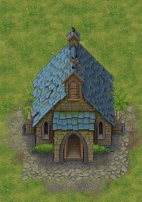

Church
| Church | |
|---|---|
 | |
Location information
| |
Buildable
|
True |
Exits
|
Alchemy Lab, Graveyard |
Npcs
| |
| Bishop | |

The church can be found in the graveyard, but access to it is blocked off until you become a preacher. The church starts with a base 3  rating and in the beginning, the casual prayer you are given for free will be the only one you can perform reliably. Holding sermons in the church once each
rating and in the beginning, the casual prayer you are given for free will be the only one you can perform reliably. Holding sermons in the church once each  is the main method of collecting
is the main method of collecting
Faith, a necessary resource for study, crafting, and zombies, as well as a source of money.
You can eventually craft sermons that offer buffs and perks beyond the small amount of faith and money the starter sermon offers.
Church upgrade
The church can be opened and upgraded twice by talking to the Bishop at  and following his questline. For each step, you'll need to meet a minimum
and following his questline. For each step, you'll need to meet a minimum  and
and  in addition to turning in items. For more details see Bishop.
in addition to turning in items. For more details see Bishop.
Note: Be careful not to complete the interaction with the Bishop to upgrade your church before you can afford the appropriate papers. Otherwise you won't be able to perform sermons. With a decent big church of 50  and a good graveyard with about 200
and a good graveyard with about 200  , you can earn
, you can earn  30 to
30 to  40 each
40 each  by using a
by using a  quality sermon.
quality sermon.
| Church Size | Rating needed | Items needed |
|---|---|---|
| Church (first access) | 5 |
none |
| Big Church | 30 |
• building permission (upgrade) • |
| Cathedral | 200 |
• 3× A carved piece of marble (must be |
Sermon
For the main article see sermon.
Every week on  you'll be able to perform a sermon in the church. The number of parishioners attending this sermon and the amount of
you'll be able to perform a sermon in the church. The number of parishioners attending this sermon and the amount of
Faith they provide you with is largely dependent on your church rating  , the type of sermon you perform and the quality of it. Each 5
, the type of sermon you perform and the quality of it. Each 5  provides 1 Faith, each
provides 1 Faith, each  after that provides a 20% chance to gain one additional faith.
after that provides a 20% chance to gain one additional faith.
The amount of money you collect in the donation box is determined by the graveyard rating  with a bonus from
with a bonus from  , and also by the type and quality of the sermon performed.
, and also by the type and quality of the sermon performed.
You need the
rightful citizen papers to perform a sermon at the big church.
While you do not need
aristocrat papers to perform a sermon in the cathedral, they are required to further the Bishop questline.
Workstations
Church rating  is increased by making use of the various pieces of furniture and equipment which can be built in the church itself.
is increased by making use of the various pieces of furniture and equipment which can be built in the church itself.
List of furniture which provides a bonus to church rating:
| Improvement | Rating | Cost | Notes | Size |
|---|---|---|---|---|
| Soul Receiver |
None | 3× Simple iron parts 1× Conical flasks 1× Wooden plank |
Only available with the Better Save Soul DLC, after unlocking the Useful equipment technology.
2 spots available. (This shares the spots with the Chest) |
2x2 |
| Chest |
None | 4× Flitch 4× Nails 2× Simple iron parts |
2 spots available. Can be accessed from the lectern to perform the Sermon. (Shares the spot with the Soul receiver) | 2x2 (rotatable) |
| Wooden church shrine |
5 |
4× Wooden beam 4× Wooden plank 4× Simple iron parts |
3x4 or 4x3 | |
| Stone church shrine |
8 |
4× Wooden beam 2× A carved piece of marble 4× Complex iron parts |
3x4 or 4x3 | |
| Candelabra I |
1 |
6× Simple iron parts |
Takes 1 candle per use. | 2x3 |
| Candelabra II |
2 |
4× Simple iron parts 4× Complex iron parts |
Takes 2 candles per use. | 2x3 |
| Candelabra III |
3 |
8× Complex iron parts 2× Gold jewelry details |
Takes 3 candles per use. | 2x3 |
| Wall candelabra I |
1 |
6× Simple iron parts |
No spots in a small church, 4 spots in a big church, 5 for the cathedral. Takes 1 candle per use. |
Like a T of 4 blocks (rotatable) |
| Wall candelabra II |
2 |
4× Simple iron parts 4× Complex iron parts |
No spots in a small church, 4 spots in a big church, 5 for the cathedral. Takes 2 candles per use. |
Like a T of 4 blocks (rotatable) |
| Wall candelabra III |
3 |
8× Complex iron parts 2× Gold jewelry details |
No spots in a small church, 4 spots in a big church, 5 for the cathedral. Takes 3 candles per use. |
Like a T of 4 blocks (rotatable) |
| Incense burner |
1 |
4× A polished brick of stone 4× Simple iron parts |
Takes 1 incense per use. | 2x4 |
| Incense burner II |
3 |
4× Simple iron parts 4× A polished brick of marble 4× Complex iron parts |
Takes 1 incense per use. | 2x4 |
| Confessional |
5 |
12× Wooden plank 4× Complex iron parts |
Have a small chance to produce 1× Faith and either a Story or Story. |
4x4 (Rotatable) |
| Confessional II |
7 |
12× Wooden plank 2× Jointing 4× Complex iron parts |
Have a small chance to produce 2× Faith and either a Story or Story. |
4x4 (Rotatable) |
| Church bench |
1 |
6× Wooden plank 4× Nails |
Maximum of 6 for all tiers of the church. | 7x2 |
| Soft church bench |
3 |
8× Wooden plank 4× Jointing 2× Silk |
Maximum of 6 for all tiers of the church. | 7x2 |
| Stained glass window |
5 |
4× Glass 5× Complex iron parts 2× Gold jewelry details |
• Only available for the cathedral. • Only one spot possible, which can also be occupied by a wall candelabra. • Bug: Can't be removed (version 1.206). |
3x2 |
Temporary effects
In addition, by using candles in the candelabras and incense with the incense burners, it's possible to increase the church's  for several hours.
for several hours.
| Item | Rating | Notes |
|---|---|---|
| Candle (1) |
1 |
Can be crafted at the church workbench, or can be purchased from the Bishop at tier I. |
| Candle (3) |
2 |
Can be crafted at the church workbench, or can be purchased from the Bishop at tier II. |
| Candle (4) |
3 |
Can be crafted at the church workbench, or can be purchased from the Bishop at tier III. |
| Candle (6) |
As of v1.035, not usable |
Can be purchased from the Bishop at tier III.
Bug: Can't be used in any Candelabra |
| Incense |
2 |
Can be purchased from the Bishop at tier II. Made from freshener, obtainable through alchemy. |
| Incense II |
4 |
Can be purchased from the Bishop at tier III. Made from aromatizer, obtainable through alchemy. |
Maximum Church Rating
The maximum (temporary) church rating seems to be 261  only achievable in a cathedral. A higher passive rating is achievable by swapping out the candelabras for other objects. Check the following table for this:
only achievable in a cathedral. A higher passive rating is achievable by swapping out the candelabras for other objects. Check the following table for this:
| Improvement | Rating |
|---|---|
| Altar | 1 |
| Lectern | 2 |
| 6× Soft church bench |
18 |
| 15× Candelabra III |
45 |
| 5× Wall candelabra III |
15 |
| 60× Candle (4) |
180 |
| |||||